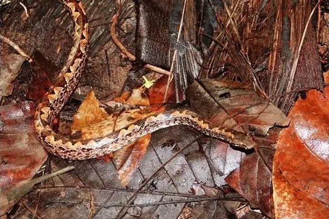

Snakes of Palau
4 snake species are recorded in Palau in SnakeList: 0 venomous and 4 non-venomous, from 4 families.
- 4species
- 4non-venomous
- 4families
These totals count the snakes SnakeList records as living in Palau. A species counts if it is recorded anywhere in the country, so not every snake lives in every region.
Species
Showing 4 species

Palau Bevel-nosed BoaCandoia superciliosa Palau BockadamCerberus dunsoni
Palau BockadamCerberus dunsoni Palau BronzebackDendrelaphis striolatus
Palau BronzebackDendrelaphis striolatus- No photo yetPalau Island Blind SnakeRamphotyphlops acuticauda
No snakes in Palau match.
Palau’s snakes in numbers
- Families: Boidae 1, Colubridae 1, Homalopsidae 1, Typhlopidae 1.
- 4 are recorded in no other country in SnakeList: Palau Bevel-nosed Boa, Palau Bockadam, Palau Bronzeback, Palau Island Blind Snake.
States and provinces
The states and provinces where SnakeList records snakes, with how many species each has. Each page has its families, venomous snakes, the species found only there, its cities and neighbours.
Cities
Its biggest cities, biggest first. Snakes are recorded by state or province, not by city, so each city page shows the snakes of the state or province it is in.
- Ngerulmud Ngchesar
No place matches that.